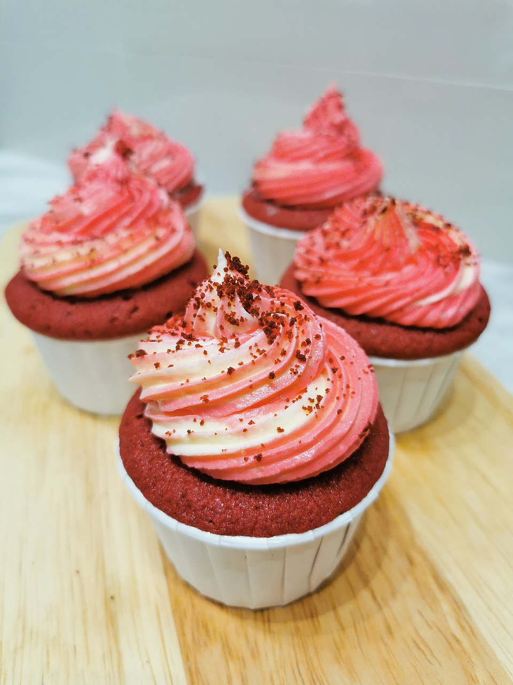

Red Velvet Cupcakes
Description
These red velvet cupcakes are perfectly sweet and wonderfully moist with a pleasant hint
of tanginess. This easy dessert will quickly become a staple in your recipe box!
Ingredients
Cake:
- 2 1/2 cups of flour
- 1/2 cups of unsweetened cocoa powder
- 1 teaspoon of baking soda
- 1/2 teaspoon of salt
- 1 cup of butter, softened
- 4 large eggs
- 1 cup of sour cream
- 1/2 cup of milk
- 1 (1 ounce) bottle of McCormick red food colour
- 2 teaspoons McCormick pure vanilla extract
Vanilla Cream Cheese Frosting:
- 1 (8 ounce) package cream cheese, softened
- 1/4 cup butter, softened
- 2 tablespoons sour cream
- 2 teaspoons McCormick pure vanilla extract
- 1 (16 ounce) box confectioners' sugar